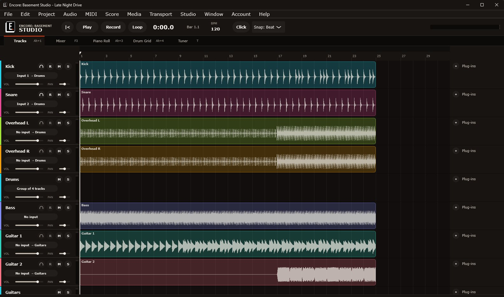

ENCORE.Basement Studio
A free studio for bands and home recording. Record every input on your interface at once, edit, mix with the ENCORE. plugins built in, and send finished songs to ENCORE.
The first time you open it
Windows: it isn't code-signed yet, so SmartScreen may warn you. Click More info, then Run anyway.
Mac: it isn't notarized by Apple yet. Open it once (macOS will refuse), then go to System Settings > Privacy & Security, scroll down and click Open Anyway. On macOS 14 and older you can also right-click the app and choose Open.
Linux and Raspberry Pi: no warnings; see below for which file to pick.

A real mixer, with the ENCORE. sound built in
Channel strips, sends to shared reverb and delay, group tracks for the whole kit, automation drawn on the tracks, and a master strip.
- ENCORE. Vox: a whole vocal chain with tune and harmony
- ENCORE. Verb, Equalize and Master on any track or the mix
- Your own VST3 plugins too, checked safely so a broken one can't crash it
Linux and Raspberry Pi
For 64-bit Raspberry Pi OS (Bookworm or newer) on a Pi 4, Pi 400, Pi 5 or Pi 500, and for Debian 12+ and Ubuntu 22.04+ on a PC. Recording needs a USB audio interface on a Pi (they have no mic input).
How to install
Installer (.deb): double-click it, or in a terminal in your Downloads folder: sudo apt install ./encore-basement-studio_*.deb. It shows up in your menu under Sound & Video, and .encore songs open in it.
AppImage: right-click it, Properties, allow it to run as a program (or chmod +x), then double-click. If it won't start, install libfuse2.
Sound: works with your interface through ALSA, JACK or PipeWire.
Built for the way bands work
From the first take to a release-ready file, without leaving the basement.
Record the whole band
Every input on your interface is its own track, all at once. Meters with clip lights, hear yourself through headphones, loop and punch in.
Low latency, set up for you
On Windows it finds your interface's own ASIO driver and switches to it by itself. Templates sized for 2, 4 and 8-input interfaces.
Edit like you mean it
Snap to the grid, trim, fades and crossfades, split, takes, clip gain, markers for every verse and chorus, and right-click any clip for the rest.
A real mixer
Channel strips, sends to shared reverb and delay, group tracks for the whole kit, automation drawn on the tracks, and a master strip.
ENCORE. plugins, built in
ENCORE. Vox (a whole vocal chain with tune and harmony), Verb, Equalize and Master. Your own VST3 plugins work too, checked safely so a broken one can't crash it.
Instruments and MIDI
Play your instrument plugins or the built-in synth from a keyboard or pads, edit in a piano roll, quantize, and build beats in the drum grid.
Tuner, metronome, shortcuts
A tuner with 87 instruments and their tunings, a metronome with sounds and accents, and every keyboard shortcut yours to change.
Release-ready exports
The mix or every track as stems, WAV, FLAC or MP3 at any rate, loudness for streaming, and a release package for ENCORE. with your details and cover.
Safe with your songs
Each song is its own folder, an automatic copy every two minutes, and it offers your work back if it ever closes unexpectedly.